--------点击蓝字关注我--------
--------点击蓝字关注我--------
去年年末的时候，我曾经写过一篇《在美国撞车是怎样的一种经历》，描述了我出车祸的前前后后的经过。后来不久，我就找了个当地的dealer买了一辆2019的斯巴鲁森林人。
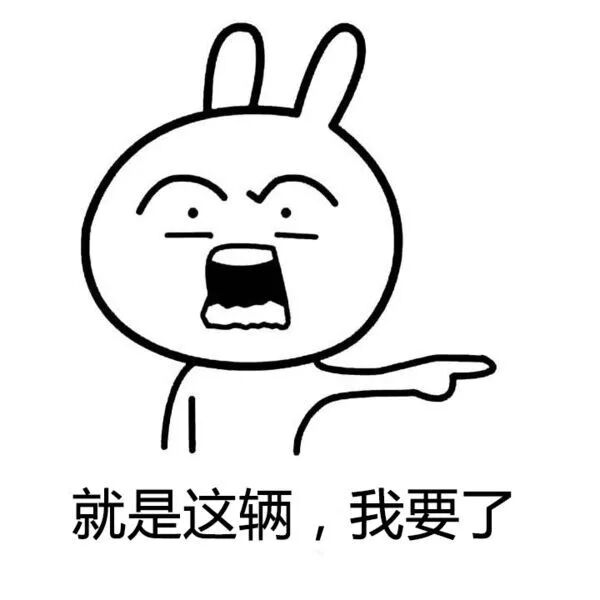
之所以买这车，是因为车上有个评价不错的辅助驾驶系统，可以帮忙保持车距，在快撞车之前自动刹车之类的，对于我这种开车经常打瞌睡的人来说比较有用。
不过这车虽然不错，但低配版的音响实在是太差了，放起钢琴曲来有一种敲击塑料的感觉。
升级到高配版的音响又要连带升级很多不必要的功能，至少需要多花三四千刀出去，有点舍不得。
于是我就开始寻找一种相对便宜而又解决问题的方法
一：直接找汽车音响店
我之前一直都不知道，原来汽车的改装店中，还有专门一类做汽车的音响改装，整个湾区大大小小有至少十几家专门做这个的实体店。
Yelp搜索Car Steoreo Shop，可以找到好多类似的店铺。据说以前类似的店铺要更加多一点，近些年生意越来越难做了，倒掉了不少。
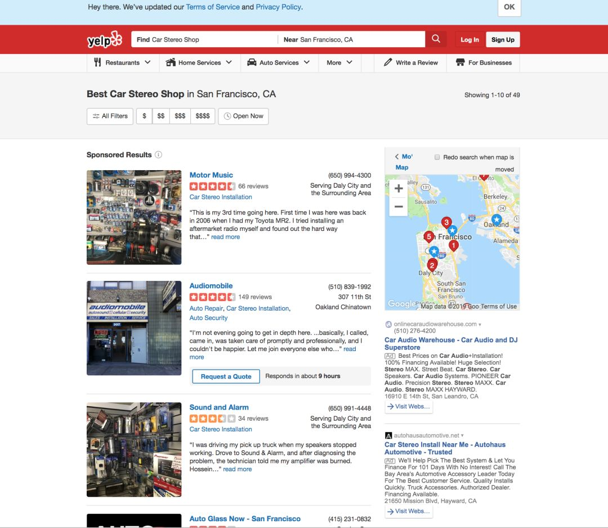
我去开车找了几家店问了一下价格，平均来说报价从1200 - 2500刀不等。这个费用中人工费占60%，一般至少4小时人工起算，每小时报价120-160刀不等。
升级的方案也有多种。大体的意思是建议我要么就只加一个低音炮，要么就全部换掉。
在我强调了我不太听需要低音炮的音乐以后，大部分店主表示我们也可以只升级前排座位左右的两个喇叭，但是效果有限，而且不换功放的话喇叭的功率不能大，那样的喇叭价格更贵。
要是我真的想换，推荐要换四个喇叭加功放，以及一个功放接音源的调音器，用来根据新的器材的特性来调整音效，全部费用在1600以上。
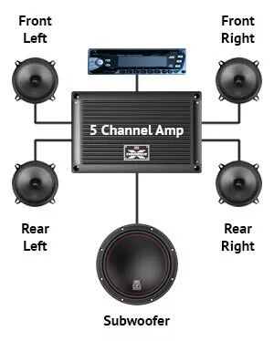
一套包含四个喇叭，一个功放，一个低音炮的完整系统
在整个沟通当中，最让我感觉到不爽的是价格的极度不透明。由于我自己不是很懂行，各家推荐的喇叭，功放等型号也不太一样，因此我很难搞清楚一个元器件的合理价位大约是多少。
甚至有的时候，老板给我报的一个型号，网络上根本就查不到对应的器材，更不要说估计器材的大致价格了。
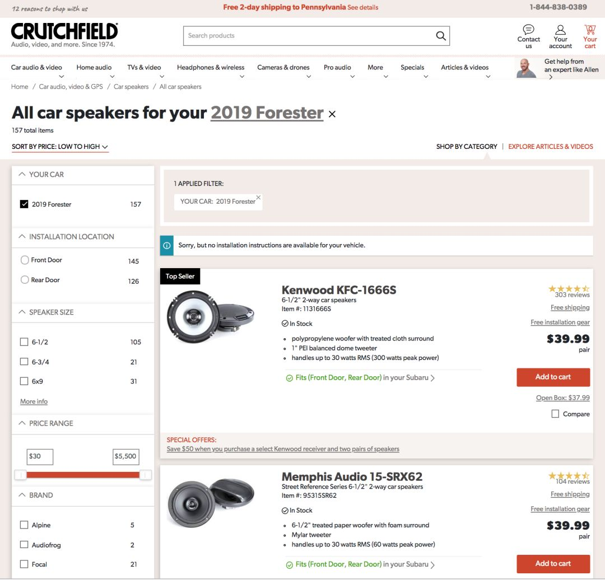
crutchfield似乎是网上车子音响器件的集散地
秉承着宁愿不买也不要被坑的原则，我又开始寻找另一种方案。。。
二：直接购买汽车厂商推荐配置
虽说去这些店家跑浪费了一点时间，我的收获还是有的。
主要的收获是：我不能只换喇叭，如果要效果好，还要换功放以及用调音器调整音效。
我查到知乎上有个帖子，是说调音器的调试需要专业技能，如果调的不好，甚至还会不如默认的音响器材。汽车上的默认器材都是有非常专业的技术人员反复调试的。所以如果自己要改装，一定要在这方面舍得花钱。
这时候我回想起在买新车的时候，似乎有瞄到过我这个车有对应的音响升级组件。说不定我可以直接买那种人家已经调好的直接装上。
查了一下，发现卖这个组件的店家还不少。不过卖的店家都是一些dealer自己在网上开的店，结账系统非常简陋。
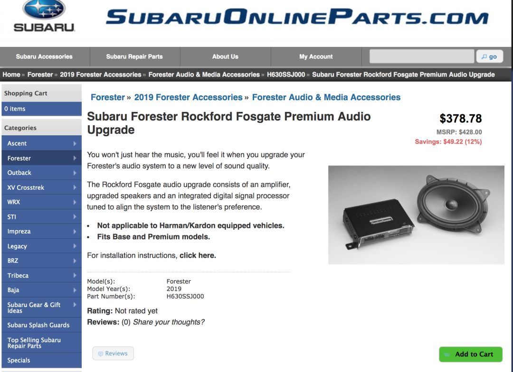
一个简陋的电商网站
组件一共包括两个前排的喇叭，一个调音器，一个功放，对应的线缆，以及一些固定用的小原件。
这个大约300多刀的组件运到以后，我就开始琢磨着如何装它了。组件是配有安装说明书的，我本想着自己努力努力花个一天把它自己装了，没想到直接卡在了第一步：把音频控制系统的面板打开：
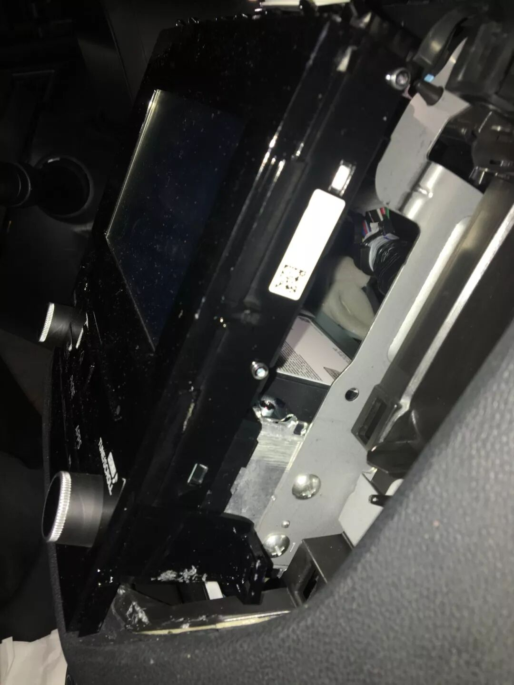
打开后的样子
在努力了近2个小时并且去homedepot买了工具再度尝试失败后，我终于放弃，决定找人来装。
给好几个之前的汽车音响店打了电话，报价都在400刀以上。嗯。。。我的元器件加起来才300多刀。。。不过后来发现有那种做上门的汽车音响安装师，价格便宜很多，最后谈妥了250刀装完。
三：施工过程
专业的人员就是不一样，我花了2个小时才打开的面板，人家5分钟就打开了。
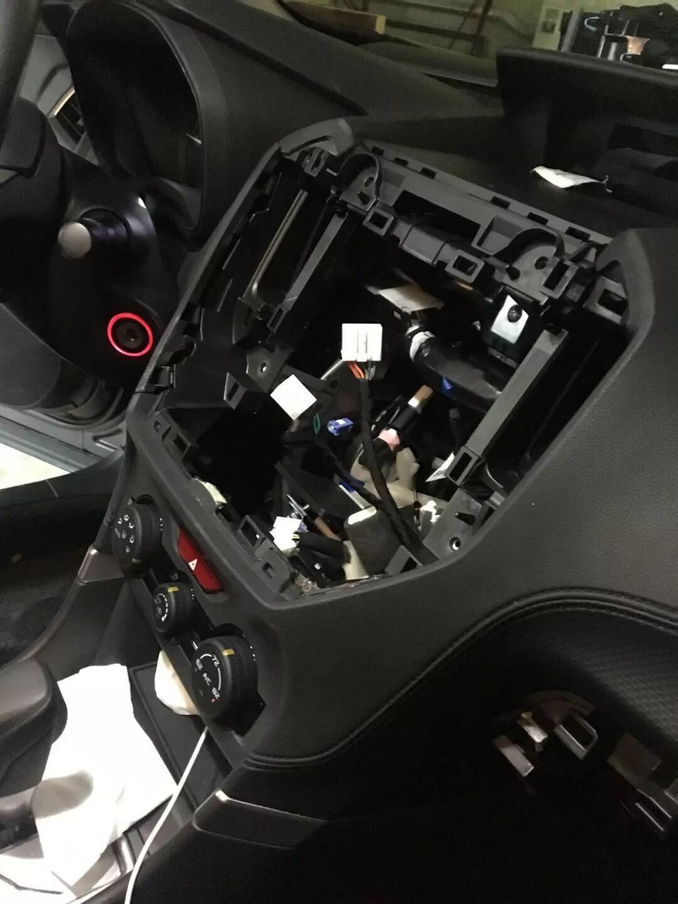
彻底打开
然后把放文件的盒子拆下来，因为要把线缆从中间穿过。
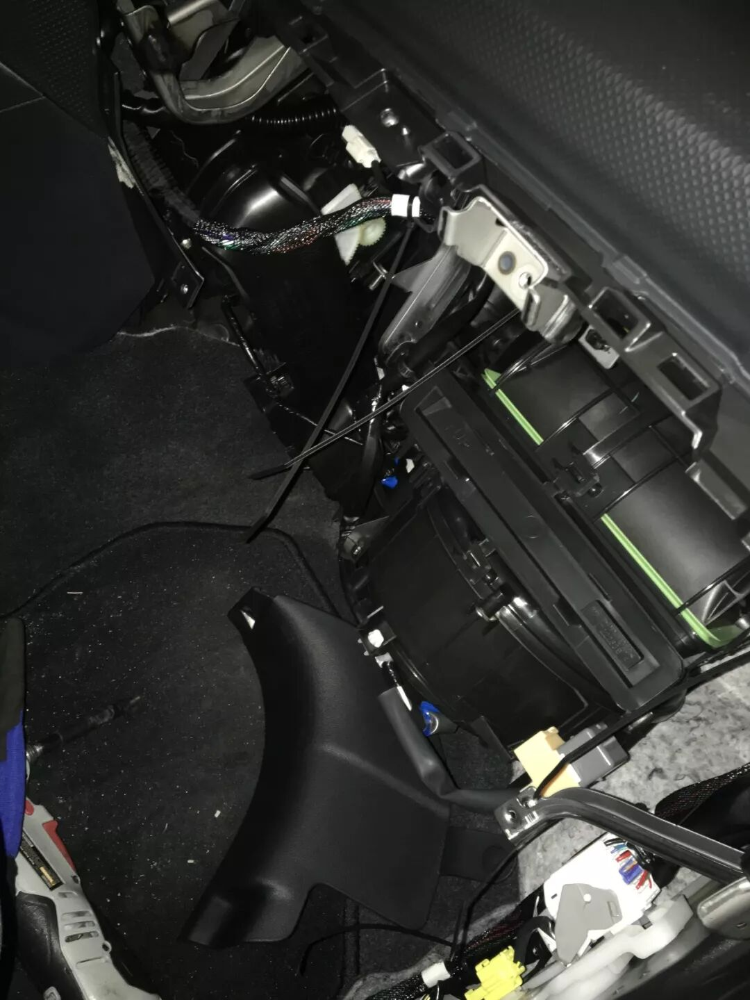
手套箱
把门的面板拆下来。
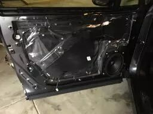
换上新的喇叭，这个喇叭比原来的重好多，鼓面也大好多。
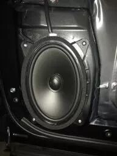
这个是原来的旧喇叭。
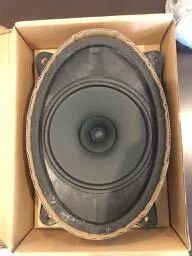
功放放在副驾的座位下面。
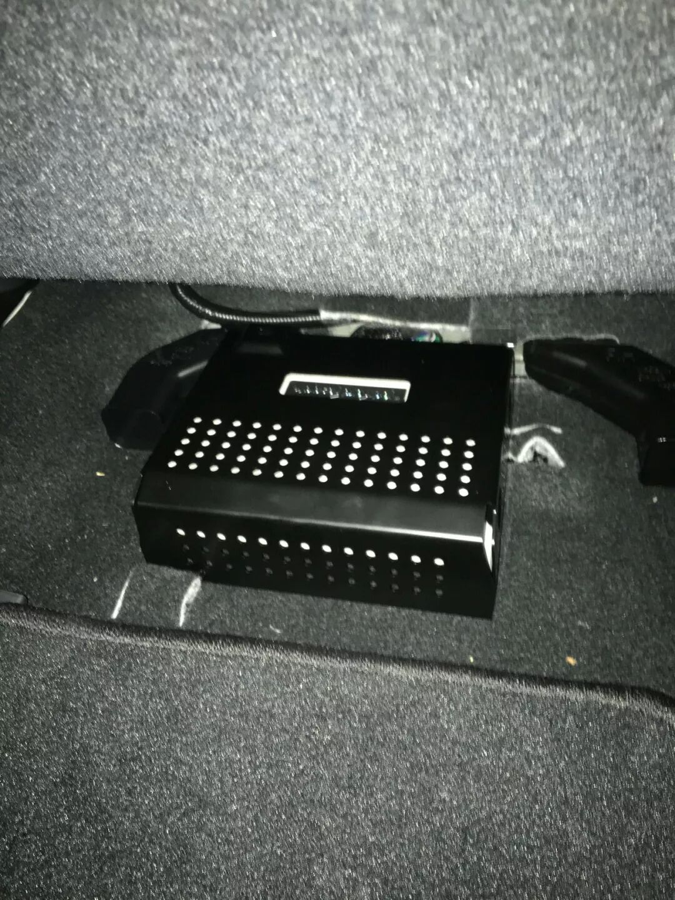
于是一切就装好啦！
四：一个旧的喇叭是如何被拆的
鉴于旧的拆下来的喇叭不要了，我决定拆一下它。
一个喇叭
撕开鼓面
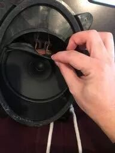
全部扯下
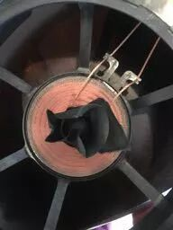
拔下鼓面
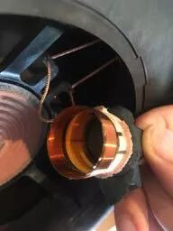
撕下那一圈纸
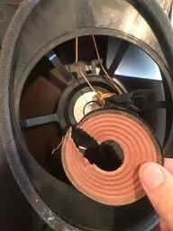
（拆完）
附：一个小预测
美国的现有二手车互联网交易平台将不会有大的起色。
具体描述一下我所谓的大的起色：美国的这三家目前最头部的二手车互联网交易平台，Carvana，Shift，Vroom，将无法在未来5年内，将盈收做大到足以像今天的Lyft，Zoom等公司一样上市。
这个预测主要是基于我个人的用户体验。判断的理由主要有两点。
一是在这三家平台上，二手车的价格并没有办法做到相对于传统的Dealer来说，有一个明显的优势。
二是相对于整个地区dealer所能提供的车源选择来说，平台能提供的选择反而更少，客户服务也并没有好多少。
鉴于其选择没有变多，价格没有优势，将无法对传统的dealer为主的传统车辆销售渠道造成巨大的威胁。